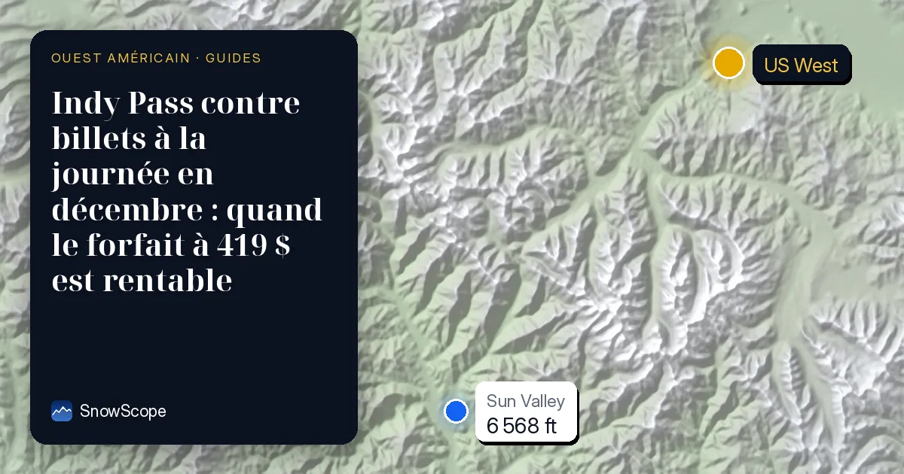

Indy Pass contre billets à la journée en décembre : quand le forfait à 419 $ est rentable
L'Indy Pass vend une idée simple : deux jours dans chacune de plus de 300 stations de ski indépendantes. Pour un séjour de décembre, la question est de savoir si deux ou trois petites stations avec de vraies chances de neige valent mieux que des billets à la journée. Nous avons fait le calcul pour sept stations Indy de notre liste de décembre.
Consultez les prévisions neige en temps réel pour US West sur l'application SnowScopeHauteurs de neige, alertes poudreuse et carte 3D, gratuitement.
Ce que coûte le forfait
Pour 2026-27, l'Indy Base Pass coûte 419 $ pour un adulte et donne deux journées complètes (ou deux soirées) dans chaque station partenaire, avec des dates d'exclusion. L'Indy+ Pass coûte 469 $, avec les mêmes deux jours par station mais sans date d'exclusion. Si votre séjour de décembre tombe pendant les fêtes, la question des exclusions compte plus que l'écart de prix entre les deux formules.

Deux jours, payés au guichet à la place
Voici ce que coûtent deux jours aux prix journaliers vérifiés, calcul fait par nos soins. Loveland : 120 $ avec les billets en ligne de début de saison, mais 318 $ au guichet à partir du 14 décembre. Brundage : 130 $ à son prix de départ. White Pass : 138 $ à son prix en ligne le plus bas hors pointe. Sunlight : 148 $ à son prix de départ. Beaver Mountain : 150 $. Montana Snowbowl : 156 $ en semaine, 170 $ le week-end. Snow King : 200 $ à son prix de départ.
Le forfait n'est donc pas rentable sur une seule station. Aux prix les plus bas, il commence à être rentable dès la troisième station visitée pour deux jours ; avec des prix de week-end, de pointe ou de guichet, deux stations peuvent suffire.
Quelles stations Indy valent le coup en décembre
La neige compte autant que le prix. Sur notre historique, la part des hivers avec au moins 20 in (50 cm) à mi-pente le 15 décembre est de 87 % à White Pass, Snow King et Brundage, 83 % à Montana Snowbowl, 72 % à Sunlight, 67 % à Loveland et 57 % à Beaver Mountain.
Un road trip Indy de décembre dans le Nord-Ouest et les Rocheuses du nord, White Pass, Brundage, Snowbowl et Snow King, se trouve du côté le plus sûr. Beaver Mountain et Loveland sont mieux gardées pour la fin décembre, quand leurs chances s'améliorent.
Quand les billets à la journée l'emportent
Si vous skiez un ou deux jours dans une seule station, les billets à la journée gagnent facilement : un lundi à Montana Snowbowl coûte 78 $, une journée en semaine à Beaver Mountain 75 $. Et à Loveland, le billet en ligne de début de saison à 60 $ jusqu'au 13 décembre est une meilleure affaire que n'importe quel jour de forfait que vous pourriez y consacrer.
L'Indy Pass gagne pour le skieur qui bouge : plusieurs stations, deux jours chacune, tout au long de l'hiver. Décembre est un bon mois pour commencer à l'utiliser, pas la seule raison de l'acheter.
Conseils aux skieurs
- Comptez d'abord vos sorties : une seule station, prenez des billets à la journée ; trois stations ou plus, regardez le forfait.
- Dates de fêtes ? Vérifiez la liste d'exclusion de l'Indy ou payez le supplément pour l'Indy+.
- Associez dans un même séjour les stations Indy les plus sûres en décembre (White Pass, Brundage, Snowbowl, Snow King).
- Gardez les journées en ligne à 60 $ de Loveland pour début décembre et utilisez le forfait ailleurs.
Références et crédits
- White Pass, online day tickets 2026/27 (official) skiwhitepass.com/online-day-ticket-sales
- Beaver Mountain, tickets and passes 2026-2027 (official) www.skithebeav.com/tickets-and-passes/
- Snow King Mountain, winter day tickets (official store) store.snowkingmountain.com/en/catalogue/category/500-winter-lift-tickets/510-day-ticket_447/
- Loveland Ski Area, lift tickets 2026-27 (official) skiloveland.com/lift-tickets/
- Brundage Mountain, daily lift tickets (official) brundage.com/daily-lift-tickets/
- Montana Snowbowl, lift tickets 2026/27 (official) montanasnowbowl.com/sbblog/lift-tickets/
- Sunlight Mountain Resort, lift tickets (official) sunlightmtn.com/lift-tickets/
- Indy Pass, shop 2026-27 (official) www.indyskipass.com/shop
À propos de ces chiffres
Chiffres de neige : historique SnowScope, 46 hivers passés (1980-81 à 2025-26) aux altitudes indiquées (bas, mi-pente, sommet), une reconstitution de la neige passée pour une zone, corrigée de l'altitude (base ERA5-Land ; Snow_Hydro 1 km pour le Maroc), pas les bulletins de la station. Neige actuelle : la carte SnowScope. Remontées, pistes et altitudes : cartographie OpenSkiMap. Prix : les pages officielles listées ci-dessous, consultées le 13 novembre 2026 ; les prix dynamiques varient avec la date et la demande.
Citer ce bulletin
Pour la recherche, l'enseignement ou la presse : chiffres et graphiques réutilisables librement sous CC BY 4.0 avec cette citation.
SnowScope (2026), Indy Pass contre billets à la journée en décembre : quand le forfait à 419 $ est rentable, https://snowscope.app/blog/fr/2026/11/indy-pass-vs-day-tickets-december-2026.html, consulté le 2026-11-14
SnowScope (Atlas Labs). (2026, November 14). Indy Pass contre billets à la journée en décembre : quand le forfait à 419 $ est rentable. SnowScope snow reports. https://snowscope.app/blog/fr/2026/11/indy-pass-vs-day-tickets-december-2026.html
BibTeX
@misc{snowscope2026indypassvsdayticketsdece,
author = {{SnowScope (Atlas Labs)}},
title = {Indy Pass contre billets à la journée en décembre : quand le forfait à 419 $ est rentable},
year = {2026},
month = nov,
howpublished = {\url{https://snowscope.app/blog/fr/2026/11/indy-pass-vs-day-tickets-december-2026.html}},
note = {Published 2026-11-15 09:34 UTC; accessed 2026-11-14}
}· CC BY 4.0 · Méthodes, données et outils →
Suivre US West
Gratuit : un message quand la neige arrive, et la météo chaque matin.